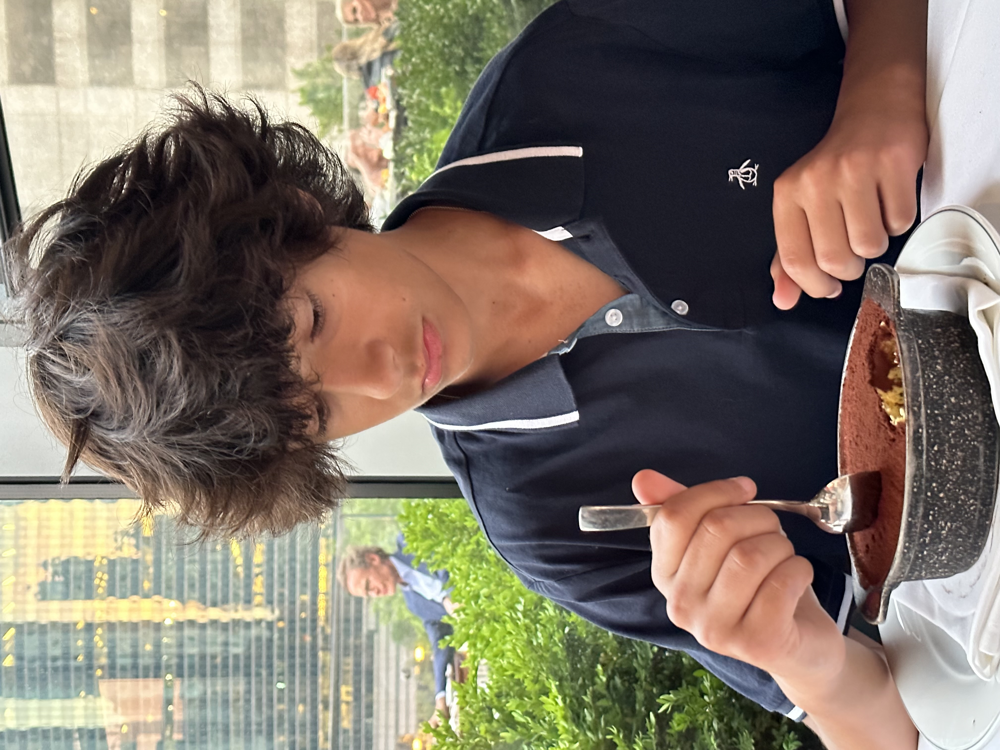
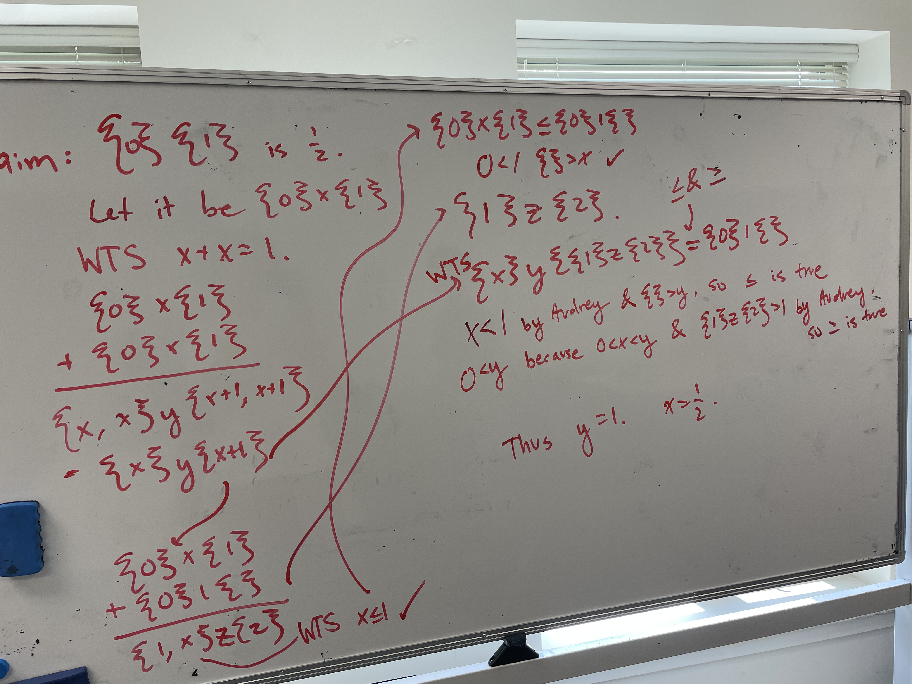
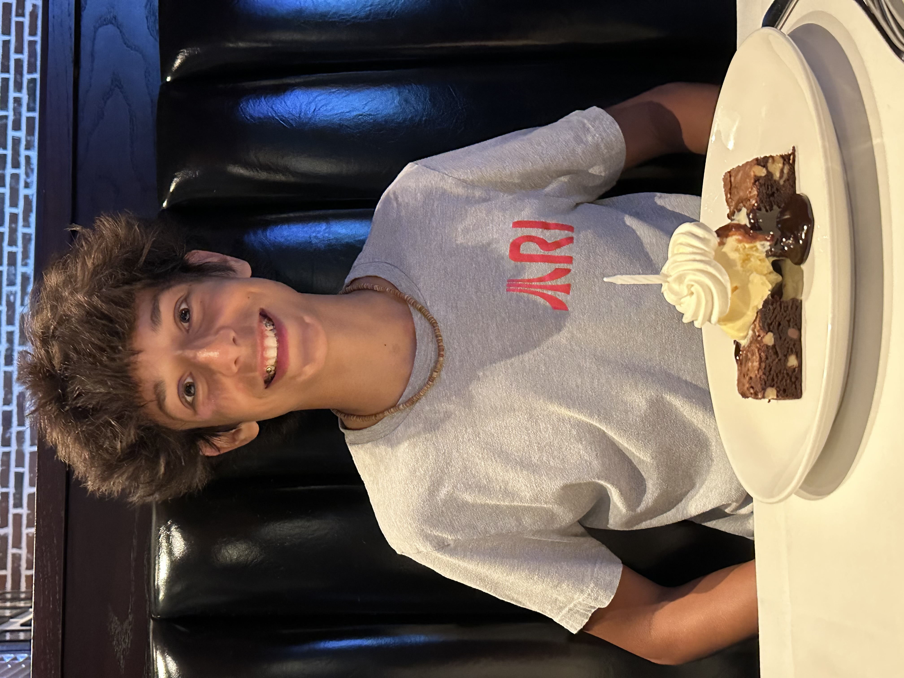
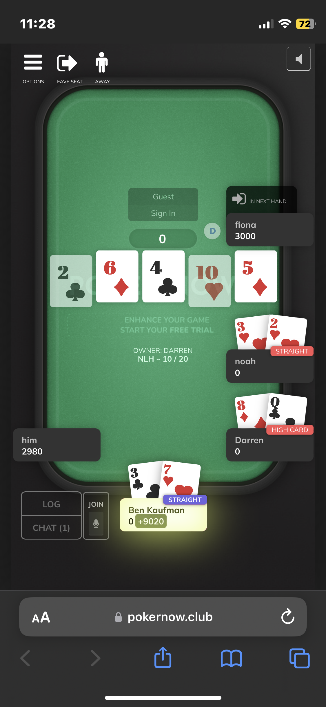

A photo of me at a birthday, that was my first desert in almost 6 months.

This is a photo of this proof that this kid named Alan and I did to prove that 1/2 was a number between zero and one in a different number system defined by the lengths of sets.

This is a photo of me two days after returning from overnight camp for seven weeks, and that was the other one of my two deserts in all of 2023.

I also played a lot of poker at one of those overnight camps, a lot of ups and downs.
I also play a lots of video games. Plat 2 in val and peak dia 2 in apex and prev world record holder in MarioKart 7.
A video of my last at bat every in baseball, could have easily been a triple if I didn't stop running at second for some reason.